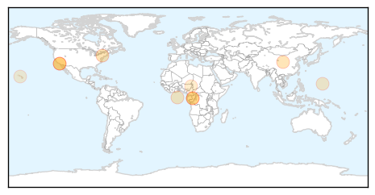
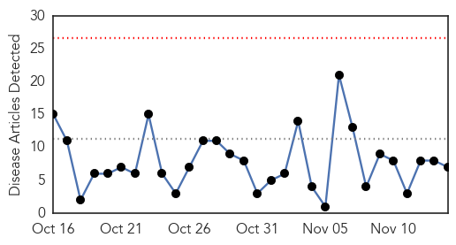

Measles
30-Day Web Trend
2 alerts, 0 warnings
30-Day Twitter Trend
0 alerts, 0 warnings
Article Locations
Article Confidences

Top Articles:
- 0.999
- News Scan for Nov 14, 2014
- 0.962
- Why is measles making a comeback?
- 0.955
- A Disease We Thought Was History Is Making An Alarming Comeback
- 0.886
- UN health agency sees 'alarming trend' as efforts lag in eliminating measles
- 0.839
- WHO cautions stalled progress in measles elimination
- 0.740
- Progress on eliminating measles has stalled, WHO warns
- 0.680
- Low blow in fight against measles
- 0.642
- Pacific Daily News
- 0.583
- 'They're poisoning us'. How religious leaders are hindering vaccination programmes across the world
- 0.533
- Pacific Daily News
Top Tweets:
-
No tweets found for Nov 14, 2014
Influenza
30-Day Web Trend
0 alerts, 0 warnings

30-Day Twitter Trend
0 alerts, 0 warnings

Article Locations

Article Confidences

Top Articles:
- 0.984
- Get your flu shot to protect yourself & your loved ones
- 0.977
- Grant Will Fund Research on New Flu Virus Found in Cows, Pigs
- 0.974
- Nasal mist flu vaccine may be best option for children
- 0.719
- Scientists Can Predict The Spread Of Disease Using Wikipedia
- 0.662
- Public Health's New Tool Is Wikipedia
- 0.612
- Mapping Evolution Of How We've Died Over The Last 100 Years
- 0.529
- NM mathematician aims to predict flu with the internet
Top Tweets:
- 0.699
- FluFactFriday: So far most circulating flu viruses this season are influenza A (H3N2) and influenza B viruses. http://t.co/T0Bj6tR2PG